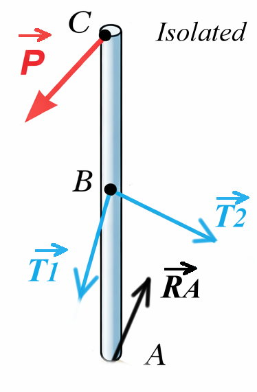
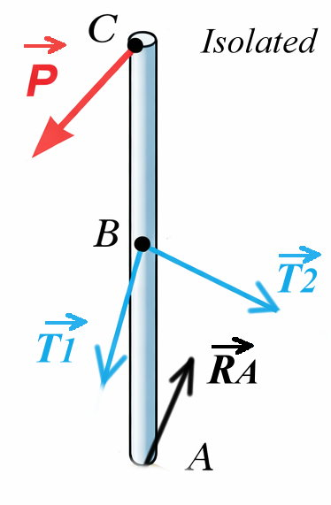

Correction Détaillée Exercice 06
Exercice 06
Le poteau ABC, de longueur 6m, est soumis à une force P. Il est maintenu en position verticale par une rotule sphérique en A et deux câbles BD et BE.
Données Géométriques :
A(0,0,0) ; B(0,0,3) ; C(0,0,6)
D(-3, 1.5, 0) ; E(3, 1.5, 0) ; F(2, -3, 0)
 

Solution Détaillée
1- Isoler le poteau ABC et construire le Diagramme du Corps Libre (DCL)
- En A : Une rotule sphérique empêche les translations dans les 3 directions mais permet la rotation. Réaction : \(\vec{R}_A(A_x, A_y, A_z)\).
- En B : Deux câbles exercent des forces de traction dirigées du poteau vers les points d'ancrage D et E. Tensions : \(\vec{T}_1\) (vers E) et \(\vec{T}_2\) (vers D).
- En C : Une force externe \(\vec{P}\) dirigée vers le point F.
2- Dans le repère \((O; x; y; z)\), déterminer les composantes des tensions \(T_1\), \(T_2\) et de la force P
Vecteur Force \(\vec{P}\) :
La force agit suivant la ligne CF.
\[ \vec{CF} = F - C = (2 - 0)\vec{i} + (-3 - 0)\vec{j} + (0 - 6)\vec{k} = 2\vec{i} - 3\vec{j} - 6\vec{k} \]
Calcul de la norme : \(||\vec{CF}|| = \sqrt{2^2 + (-3)^2 + (-6)^2} = \sqrt{4 + 9 + 36} = \sqrt{49} = 7\).
\[ \vec{P} = P \cdot \frac{\vec{CF}}{||\vec{CF}||} = \frac{P}{7} (2\vec{i} - 3\vec{j} - 6\vec{k}) \]
Vecteur Tension \(\vec{T}_1\) (Câble BE) :
La tension agit suivant la ligne BE.
\[ \vec{BE} = E - B = (3 - 0)\vec{i} + (1.5 - 0)\vec{j} + (0 - 3)\vec{k} = 3\vec{i} + 1.5\vec{j} - 3\vec{k} \]
Calcul de la norme : \(||\vec{BE}|| = \sqrt{3^2 + 1.5^2 + (-3)^2} = \sqrt{9 + 2.25 + 9} = \sqrt{20.25} = 4.5\).
\[ \vec{T}_1 = T_1 \cdot \frac{\vec{BE}}{||\vec{BE}||} = \frac{T_1}{4.5} (3\vec{i} + 1.5\vec{j} - 3\vec{k}) \]
Soit : \(\vec{T}_1 = T_1 (\frac{2}{3}\vec{i} + \frac{1}{3}\vec{j} - \frac{2}{3}\vec{k})\) (après simplification par 4.5).
Vecteur Tension \(\vec{T}_2\) (Câble BD) :
La tension agit suivant la ligne BD.
\[ \vec{BD} = D - B = (-3 - 0)\vec{i} + (1.5 - 0)\vec{j} + (0 - 3)\vec{k} = -3\vec{i} + 1.5\vec{j} - 3\vec{k} \]
Calcul de la norme : \(||\vec{BD}|| = 4.5\).
\[ \vec{T}_2 = T_2 \cdot \frac{\vec{BD}}{||\vec{BD}||} = \frac{T_2}{4.5} (-3\vec{i} + 1.5\vec{j} - 3\vec{k}) \]
Soit : \(\vec{T}_2 = T_2 (-\frac{2}{3}\vec{i} + \frac{1}{3}\vec{j} - \frac{2}{3}\vec{k})\).
3- Écrire les équations d'équilibre statique du poteau ABC
Pour l'équilibre, la somme des moments en A doit être nulle (\(\sum \vec{M}_A = \vec{0}\)) et la somme des forces doit être nulle (\(\sum \vec{F} = \vec{0}\)).
Les bras de levier sont portés par l'axe Z : \(\vec{AC} = 6\vec{k}\) et \(\vec{AB} = 3\vec{k}\).
Rappel produit vectoriel : \(\vec{k} \wedge \vec{i} = \vec{j}\) et \(\vec{k} \wedge \vec{j} = -\vec{i}\).
Équations des Moments :
Équations des Forces :
4- À partir de ces équations, exprimer en fonction de P les composantes de la réaction en A, ainsi que les tensions \(T_1\) et \(T_2\)
Calcul de \(T_1\) et \(T_2\) :
De (Eq. 2), divisons par 2 : \(\frac{6P}{7} + T_1 - T_2 = 0 \implies T_2 - T_1 = \frac{6P}{7}\).
Additionnons (Eq. 1) et (Eq. 2 divisée par 2) ? Non, utilisons le système :
2) \(T_2 - T_1 = \frac{6P}{7}\)
Somme des deux : \(2T_2 = \frac{24P}{7} \implies \mathbf{T_2 = \frac{12P}{7}}\).
Différence : \(2T_1 = \frac{12P}{7} \implies \mathbf{T_1 = \frac{6P}{7}}\).
Calcul de la réaction \(\vec{R}_A\) :
Pour \(A_x\) (Eq. 3) :
\(A_x = -\frac{2P}{7} - \frac{2}{3}(T_1 - T_2)\)
Or, \(T_1 - T_2 = -\frac{6P}{7}\).
\(A_x = -\frac{2P}{7} - \frac{2}{3}(-\frac{6P}{7}) = -\frac{2P}{7} + \frac{4P}{7} = \mathbf{\frac{2P}{7}}\).
Pour \(A_y\) (Eq. 4) :
\(A_y = \frac{3P}{7} - \frac{1}{3}(T_1 + T_2)\)
Or, \(T_1 + T_2 = \frac{18P}{7}\).
\(A_y = \frac{3P}{7} - \frac{1}{3}(\frac{18P}{7}) = \frac{3P}{7} - \frac{6P}{7} = \mathbf{-\frac{3P}{7}}\).
Pour \(A_z\) (Eq. 5) :
\(A_z = \frac{6P}{7} + \frac{2}{3}(T_1 + T_2)\)
\(A_z = \frac{6P}{7} + \frac{2}{3}(\frac{18P}{7}) = \frac{6P}{7} + \frac{12P}{7} = \mathbf{\frac{18P}{7}}\).
\(\mathbf{T_1 = \frac{6}{7}P \approx 0.857 P}\)
\(\mathbf{T_2 = \frac{12}{7}P \approx 1.714 P}\)
\(\mathbf{\vec{R}_A = \frac{P}{7} ( 2\vec{i} - 3\vec{j} + 18\vec{k} )}\)